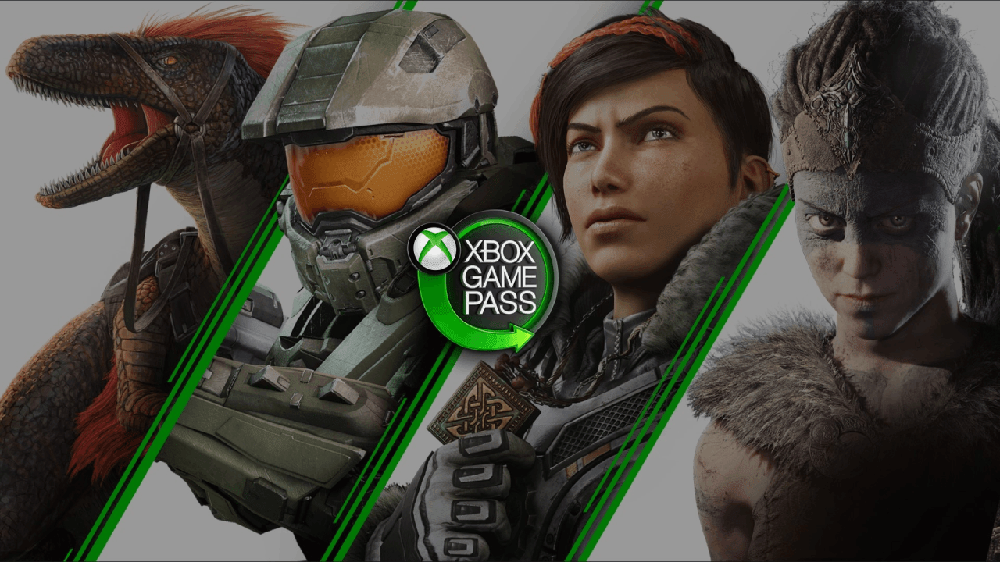

Xbox Game Pass
Xbox Game Pass es un servicio de suscripción desarrollado por Microsoft para usar con la consola de juegos Xbox One y con Computadoras Personales con Windows 10. Descrito como el "Netflix de los videojuegos", el Xbox Game Pass permite a los usuarios acceder a un catálogo de juegos de diversas editoriales por un único precio de suscripción mensual. El servicio se lanzó el 1 de junio de 2017, mientras que los suscriptores de Xbox Live Gold recibieron acceso prioritario el 24 de mayo.
Estructura
Xbox Game Pass permite el acceso ilimitado a los juegos pertenecientes al catálogo a través de su descarga directa y posterior instalación local, en este aspecto es similar a la suscripción de videojuegos de Xbox One, EA Access o PlayStation Plus y contrario a los servicios PlayStation Now o Nvidia Now, ya que estos últimos ejecutan los juegos en sus servidores propios. De acuerdo con el Jefe de Xbox Phil Spencer, esto se hizo para dar a los jugadores "un juego continuo y completo sin tener que preocuparse por problemas de streaming, ancho de banda o conectividad".
El catálogo de suscripción contiene más de 100 juegos en el momento del lanzamiento, con juegos que se añaden y retiran del catálogo.10 A diferencia de EA Access, Xbox Game Pass ofrece juegos de una amplia gama de editores, como Namco, Capcom, WB Games, 2K Games, SEGA y juegos de estudios propios de Microsoft Studios.10 Además, mientras que Playstation Now tiene una opción de alquiler para sus juegos además de una opción de suscripción de pago , Xbox Game Pass no tiene tal opción.
Las características del catálogo seleccionan juegos para Xbox One así como títulos de Xbox 360 con los que Xbox One es compatible con versiones anteriores.8 No hay límite en el número de juegos que un jugador puede descargar e instalar en sus consolas, aparte de la cantidad de espacio de almacenamiento disponible para la consola.10 Mientras un juego permanezca en el catálogo, está disponible para descarga y juego ilimitado por los suscriptores. Los jugadores pueden comprar juegos en el catálogo con un 20% de descuento, y cualquier contenido adicional relacionado para esos juegos con un 10% de descuento. El precio de descuento sólo está disponible mientras el juego está en el catálogo y es sólo para el juego en particular; a modo de comparación, el descuento de suscriptor del 10% de EA Access se aplica a cualquier contenido publicado por EA, no sólo al contenido de su catálogo de suscripción.8 Los juegos del catálogo se pueden jugar mientras la consola está desconectada, pero durante no más de 30 días antes debe volver a conectarse para verificar una suscripción activa.
Descubre tu siguente juego favorito
La propia compañía desarrolla y publica sus propios videojuegos tanto para las videoconsolas Xbox como para Windows, con la ayuda de su división Xbox Game Studios. Algunos juegos destacados producidos por Microsoft son Age of Empires, Banjo-Kazooie, Battletoads, Crackdown, Fable, Forza Motorsport, Gears of War, Halo, Killer Instinct, Minecraft, Ori, Perfect Dark, Zoo Tycoon, State of Decay, Solitario Microsoft y Microsoft Flight Simulator (simulador de vuelo) entre otros títulos.